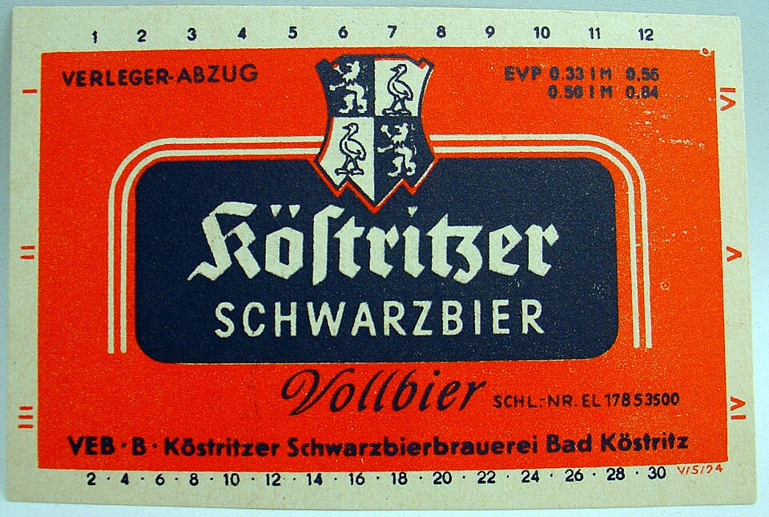

Köstritzer
Köstritzer는 독일 튀링겐의 Bad Köstritz에 있는 양조장이자 맥주 브랜드이다. Gera 인근에 위치하며 독일에서 가장 오래된 슈바르츠비어(흑맥주) 생산자 가운데 하나이다.
최종 업데이트

Köstritzer는 어떤 브랜드인가
이 브랜드는 독일 튀링겐의 Bad Köstritz에 본사를 둔 양조장이며, Gera와 가까운 곳에 있다. 1543년 상속세 문서에 'Köstritzer Inheritance'라는 이름으로 처음 언급되어 독일에서 가장 오래된 양조장 가운데 하나로 꼽힌다.
대표 제품은 슈바르츠비어(흑맥주)로, 독일의 하면발효 흑맥주 시장에서 30퍼센트의 점유율을 가진다. 동독 시기에는 수출용 맥주를 생산한 몇 안 되는 기업이었고, 1948년 국유화되어 VEB Köstritzer Schwarzbierbrauerei라는 이름으로 운영되었다.
1991년 4월 Bitburger Holding이 사업 전체를 인수했고, 이후 2005년까지 총생산량이 6배 넘게 늘었다.
Köstritzer는 어떻게 시작되고 성장했나
1543년 상속세 문서에 'Köstritzer Inheritance'로 처음 기록되었다. 1696년 House Reuss의 백작들이 양조장을 사들여 'Knightly Estate Brewery'로 이름을 바꾸었다.
1806년부터는 House Reuss의 기사들이 제후로 승격되면서 'Princely Brewery'라는 칭호를 쓸 수 있게 되었다. 1829년 화재로 양조장이 Köstritz의 다른 15개 건물과 함께 불탔고, 이후 궁전 서쪽 동에 다시 지어졌다.
1872년 Rudolf Zersch가 House of Reuss로부터 Köstritz 등의 영지를 임차했고, 1875년에는 Princely Brewery Köstritz도 임차했다.
Köstritzer의 브랜드 아이덴티티는 무엇인가
1543년 기록에서 출발한 독일 최고(最古) 수준의 양조장으로, 슈바르츠비어를 대표 제품으로 삼는 점이 다른 브랜드와 구분된다.
Köstritzer의 대표 제품과 서비스는 무엇인가
대표 제품은 알코올 도수 4.8퍼센트의 Köstritzer Schwarzbier이다. 마이스터 양조사 Carl Holomoucky의 지휘 아래 초기에 Köstritzer Schwarzbier와 라거 Blume des Elsterthales가 생산되었다.
현재는 Kranich-Bräu, Edel-Pils, Diät-Pils, Bibop(콜라와 맥주를 섞은 제품), Witbier, Pale Ale, Kellerbier도 생산한다. 1993년에는 Köstritzer Schwarzbier를 독일 시장의 중요한 브랜드로 자리 잡게 했다.
Köstritzer는 지금 어떤 상태인가
1991년 4월 Bitburger Holding이 사업의 100퍼센트를 인수했고, 1991년부터 1993년까지 양조장이 대대적으로 현대화되었다. 총생산량은 1991년 145,000 hl에서 2005년 879,000 hl로 6배 넘게 늘었다.
지금도 독일의 하면발효 흑맥주 시장에서 30퍼센트의 점유율을 차지한다.
Köstritzer 로고는 어떻게 변해왔나
자주 묻는 질문
Köstritzer는 어떤 산업의 브랜드인가요?
Köstritzer는 식음료 분야의 브랜드입니다.
Köstritzer의 브랜드 아이덴티티는 무엇인가요?
1543년 기록에서 출발한 독일 최고(最古) 수준의 양조장으로, 슈바르츠비어를 대표 제품으로 삼는 점이 다른 브랜드와 구분된다.
Köstritzer의 대표 제품은 무엇인가요?
대표 제품은 알코올 도수 4.8퍼센트의 Köstritzer Schwarzbier이다.
Köstritzer는 어느 기업이 소유하고 있나요?
1991년 4월 Bitburger Holding이 사업의 100퍼센트를 인수했고, 1991년부터 1993년까지 양조장이 대대적으로 현대화되었다.
Köstritzer의 본사는 어디에 있나요?
Köstritzer의 본사는 Bad Köstritz에 있습니다(위키데이터 기준).
Köstritzer의 공식 웹사이트는 어디인가요?
Köstritzer의 공식 웹사이트는 http://www.koestritzer.de 입니다.
출처와 검증
Köstritzer 관련 참고: 공식 웹사이트 · 위키데이터 Q314054 · 영어 위키백과. 브랜드명은 한글과 원어를 함께 표기하되 데이터에 없는 표기는 만들지 않습니다. 기원 국가·설립연도는 검수된 정의문에서 확인된 값을 우선하고, 없을 때만 공식 웹사이트 URL이 일치하는 위키데이터 개체의 값을 씁니다. 위키데이터 값은 2026-11-08 기준입니다.